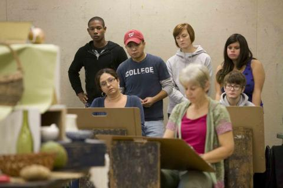

<meta http-equiv="X-UA-Compatible" content="IE=9; IE=8; IE=7; IE=EDGE" />


<script type="text/javascript" src="https://ajax.googleapis.com/ajax/libs/jquery/1.4.4/jquery.min.js"></script>
<script type="text/javascript">
function toggleDiv(divId) {
   $("#"+divId).toggle();
}
</script>

<php
drupal_add_js(drupal_get_path('theme', 'omega') . '/collapse.js');
drupal_add_js(drupal_get_path('theme', 'omega') . '/drupal.js');
drupal_add_js(drupal_get_path('theme', 'omega') . '/jquery.js');


?>


<!DOCTYPE html>


<html lang="es" dir="ltr">
<head>
  <meta http-equiv="Content-Type" content="text/html; charset=utf-8" />
<link href="../../sa/sites/all/themes/ise/images/apple-touch-icon.png" rel="apple-touch-icon" sizes="180x180" />
<meta http-equiv="x-ua-compatible" content="ie=edge" />
<link rel="shortcut icon" href="../../sites/default/files/favicon_1.ico" type="image/vnd.microsoft.icon" />
<link href="../../sa/sites/all/themes/ise/images/favicon-16x16.png" rel="icon" type="image/png" sizes="16x16" />
<meta name="viewport" content="width=device-width, initial-scale=1, maximum-scale=1, minimum-scale=1, user-scalable=no" />
<link href="../../sa/sites/all/themes/ise/images/manifest.json" rel="manifest" />
<meta name="theme-color" content="#ffffff" />
<link href="../../sa/sites/all/themes/ise/images/favicon-32x32.png" rel="icon" type="image/png" sizes="32x32" />
<link href="../../sa/favicon.ico" rel="shortcut icon" />
<link href="../../sa/sites/all/themes/ise/images/safari-pinned-tab.svg" rel="mask-icon" color="#8bc54a" />
<meta name="description" content="La Beca Federal Pell es normalmente otorgada a estudiantes de pregrado. Ayuda depende en necesidad económica, el costo de estudiar y más." />
<meta name="generator" content="Drupal 7 (http://drupal.org)" />
<link rel="canonical" href="../types/grants-scholarships/pell.1.html" />
<link rel="shortlink" href="189.html" />
<meta property="og:site_name" content="Federal Student Aid" />
<meta property="og:type" content="article" />
<meta property="og:url" content="https://studentaid.ed.gov/es/types/grants-scholarships/pell" />
<meta property="og:title" content="Becas Federales Pell" />
<meta property="og:description" content="Las Becas Federales Pell, a diferencia de los préstamos, no se deben reembolsar. Por lo general, se conceden únicamente a estudiantes de pregrado que todavía no poseen un título universitario o de posgrado." />
<meta property="og:updated_time" content="2016-03-09T11:45:36-05:00" />
<meta property="article:published_time" content="2016-03-09T11:45:36-05:00" />
<meta property="article:modified_time" content="2016-03-09T11:45:36-05:00" />
  <title>Becas Federales Pell | Federal Student Aid</title>  
  <style type="text/css" media="all">
@import url("https://studentaid.ed.gov/modules/system/system.base.css?oldvkl");
@import url("https://studentaid.ed.gov/modules/system/system.menus.css?oldvkl");
@import url("https://studentaid.ed.gov/modules/system/system.messages.css?oldvkl");
@import url("https://studentaid.ed.gov/modules/system/system.theme.css?oldvkl");
</style>
<style type="text/css" media="all">
@import url("../../sites/all/modules/jquery_update/replace/ui/themes/base/minified/jquery.ui.core.min.css@oldvkl.css");
@import url("../../sites/all/modules/jquery_update/replace/ui/themes/base/minified/jquery.ui.theme.min.css@oldvkl.css");
@import url("../../sites/all/modules/jquery_update/replace/ui/themes/base/minified/jquery.ui.accordion.min.css@oldvkl.css");
</style>
<style type="text/css" media="all">
@import url("../../sites/all/modules/comment_notify/comment_notify.css@oldvkl.css");
@import url("../../sites/all/modules/career_search/career_search.css@oldvkl.css");
@import url("https://studentaid.ed.gov/modules/comment/comment.css?oldvkl");
@import url("../../sites/all/modules/date/date_api/date.css@oldvkl.css");
@import url("../../sites/all/modules/date/date_popup/themes/datepicker.1.7.css@oldvkl.css");
@import url("https://studentaid.ed.gov/modules/field/theme/field.css?oldvkl");
@import url("../../sites/all/modules/fsa_calculators/fsa_calculators.css@oldvkl.css");
@import url("../../sites/all/modules/ise_megamenu/ise_megamenu.css@oldvkl.css");
@import url("../../sites/all/modules/ise_nslds/ise_nslds.css@oldvkl.css");
@import url("../../sites/all/modules/mollom/mollom.css@oldvkl.css");
@import url("https://studentaid.ed.gov/modules/node/node.css?oldvkl");
@import url("https://studentaid.ed.gov/modules/search/search.css?oldvkl");
@import url("https://studentaid.ed.gov/modules/user/user.css?oldvkl");
@import url("../../sites/all/modules/views/css/views.css@oldvkl.css");
@import url("../../sites/all/modules/ckeditor/css/ckeditor.css@oldvkl.css");
</style>
<style type="text/css" media="all">
@import url("../../sites/all/modules/colorbox/styles/default/colorbox_default_style.css@oldvkl.css");
@import url("../../sites/all/modules/ctools/css/ctools.css@oldvkl.css");
@import url("../../sites/all/modules/lexicon/css/lexicon.css@oldvkl.css");
@import url("../../sites/all/modules/panels/css/panels.css@oldvkl.css");
@import url("../../sites/all/modules/extlink/extlink.css@oldvkl.css");
@import url("../../sites/all/modules/forward/forward.css@oldvkl.css");
@import url("https://studentaid.ed.gov/modules/locale/locale.css?oldvkl");
</style>
<style type="text/css" media="all">
@import url("../../sites/all/themes/ise/css/newscyclefont.css@oldvkl.css");
</style>
<style type="text/css" media="all">
@import url("../../sites/all/themes/omega/alpha/css/alpha-reset.css@oldvkl.css");
@import url("../../sites/all/themes/omega/alpha/css/alpha-mobile.css@oldvkl.css");
@import url("../../sites/all/themes/omega/alpha/css/alpha-alpha.css@oldvkl.css");
@import url("../../sites/all/themes/omega/omega/css/formalize.css@oldvkl.css");
@import url("../../sites/all/themes/omega/omega/css/omega-text.css@oldvkl.css");
@import url("../../sites/all/themes/omega/omega/css/omega-branding.css@oldvkl.css");
@import url("../../sites/all/themes/omega/omega/css/omega-menu.css@oldvkl.css");
@import url("../../sites/all/themes/omega/omega/css/omega-forms.css@oldvkl.css");
@import url("../../sites/all/themes/omega/omega/css/omega-visuals.css@oldvkl.css");
@import url("../../sites/all/themes/ise/css/blog-rt.css@oldvkl.css");
@import url("../../sites/all/themes/ise/css/global.css@oldvkl.css");
</style>
<style type="text/css" media="print">
@import url("../../sites/all/themes/ise/css/print.css@oldvkl.css");
</style>
<style type="text/css" media="all">
@import url("../../sites/all/themes/ise/css/blog.css@oldvkl.css");
</style>
<style type="text/css" media="all and (max-width: 600px)">
@import url("../../sites/all/themes/ise/css/ise-mobile.css@oldvkl.css");
</style>
<style type="text/css" media="all and (min-width: 601px) and (max-width: 739px)">
@import url("../../sites/all/themes/ise/css/ise-tablet.css@oldvkl.css");
</style>

<!--[if lte IE 7]>
<link type="text/css" rel="stylesheet" href="https://studentaid.ed.gov/sites/all/themes/ise/css/ie7.css?oldvkl" media="all" />
<![endif]-->

<!--[if IE 8]>
<link type="text/css" rel="stylesheet" href="https://studentaid.ed.gov/sites/all/themes/ise/css/ie8.css?oldvkl" media="all" />
<![endif]-->

<!--[if IE 9]>
<link type="text/css" rel="stylesheet" href="https://studentaid.ed.gov/sites/all/themes/ise/css/ie9.css?oldvkl" media="all" />
<![endif]-->

<!--[if (lt IE 9)&(!IEMobile)]>
<style type="text/css" media="all">
@import url("https://studentaid.ed.gov/sites/all/themes/ise/css/ise-alpha-default.css?oldvkl");
@import url("https://studentaid.ed.gov/sites/all/themes/ise/css/ise-alpha-default-normal.css?oldvkl");
@import url("https://studentaid.ed.gov/sites/all/themes/omega/alpha/css/grid/alpha_default/normal/alpha-default-normal-12.css?oldvkl");
</style>
<![endif]-->

<!--[if gte IE 9]><!-->
<style type="text/css" media="all and (min-width: 740px) and (min-device-width: 740px), (max-device-width: 800px) and (min-width: 740px) and (orientation:landscape)">
@import url("../../sites/all/themes/ise/css/ise-alpha-default.css@oldvkl.css");
@import url("../../sites/all/themes/omega/alpha/css/grid/alpha_default/fluid/alpha-default-fluid-12.css@oldvkl.css");
@import url("../../sites/all/themes/ise/css/ise-alpha-default.css@oldvkl.css");
@import url("../../sites/all/themes/ise/css/ise-alpha-default-narrow.css@oldvkl.css");
@import url("../../sites/all/themes/omega/alpha/css/grid/alpha_default/narrow/alpha-default-narrow-12.css@oldvkl.css");
</style>
<!--<![endif]-->

<!--[if gte IE 9]><!-->
<style type="text/css" media="all and (min-width: 980px) and (min-device-width: 980px), (max-device-width: 1024px) and (min-width: 1024px) and (orientation:landscape)">
@import url("../../sites/all/themes/ise/css/ise-alpha-default.css@oldvkl.css");
@import url("../../sites/all/themes/ise/css/ise-alpha-default-normal.css@oldvkl.css");
@import url("../../sites/all/themes/omega/alpha/css/grid/alpha_default/normal/alpha-default-normal-12.css@oldvkl.css");
</style>
<!--<![endif]-->

<!--[if gte IE 9]><!-->
<style type="text/css" media="all and (min-width: 1220px)">
@import url("../../sites/all/themes/ise/css/ise-alpha-default.css@oldvkl.css");
@import url("../../sites/all/themes/ise/css/ise-alpha-default-wide.css@oldvkl.css");
@import url("../../sites/all/themes/omega/alpha/css/grid/alpha_default/wide/alpha-default-wide-12.css@oldvkl.css");
</style>
<!--<![endif]-->
  <script type="text/javascript" src="https://ajax.googleapis.com/ajax/libs/jquery/1.5.2/jquery.min.js"></script>
<script type="text/javascript">
<!--//--><![CDATA[//><!--
window.jQuery || document.write("<script src='/sites/all/modules/jquery_update/replace/jquery/1.5/jquery.min.js'>\x3C/script>")
//--><!]]>
</script>
<script type="text/javascript" src="https://studentaid.ed.gov/misc/jquery.once.js?v=1.2"></script>
<script type="text/javascript" src="https://studentaid.ed.gov/misc/drupal.js?oldvkl"></script>
<script type="text/javascript" src="../../sites/all/modules/ise_nslds/js/json2.js@oldvkl"></script>
<script type="text/javascript" src="../../sites/all/modules/ise_nslds/js/jstorage.js@oldvkl"></script>
<script type="text/javascript" src="../../sites/all/modules/ise_nslds/js/jquery.tablesorter.js@oldvkl"></script>
<script type="text/javascript" src="../../sites/all/modules/ise_nslds/js/blob.js@oldvkl"></script>
<script type="text/javascript" src="../../sites/all/modules/ise_nslds/js/filesaver.js@oldvkl"></script>
<script type="text/javascript" src="https://ajax.googleapis.com/ajax/libs/jqueryui/1.8.11/jquery-ui.min.js"></script>
<script type="text/javascript">
<!--//--><![CDATA[//><!--
window.jQuery.ui || document.write("<script src='/sites/all/modules/jquery_update/replace/ui/ui/minified/jquery-ui.min.js'>\x3C/script>")
//--><!]]>
</script>
<script type="text/javascript" src="../../sites/all/modules/ise_nslds/js/tabber.js@oldvkl"></script>
<script type="text/javascript" src="../../sites/all/modules/comment_notify/comment_notify.js@oldvkl"></script>
<script type="text/javascript" src="../../sites/all/modules/ise_nslds/js/ise_nslds.login.js@oldvkl"></script>
<script type="text/javascript" src="../../sites/all/modules/ise_nslds/js/ise_nslds.storage.js@oldvkl"></script>
<script type="text/javascript" src="../../sites/all/modules/ise_nslds/js/ise_nslds.messages.js@oldvkl"></script>
<script type="text/javascript" src="../../sites/all/modules/fb/fb.js@oldvkl"></script>
<script type="text/javascript" src="../../sites/all/modules/ise_megamenu/ise_megamenu.js@oldvkl"></script>
<script type="text/javascript" src="../../sites/all/modules/ise_megamenu/jquery.hoverIntent.minified.js@oldvkl"></script>
<script type="text/javascript" src="../../sites/all/modules/media_colorbox/media_colorbox.js@oldvkl"></script>
<script type="text/javascript" src="../../sites/default/files/languages/es_0_bEAvDunEZ84SuLFdzw7hkh2JTIIL7gG7CP3bIlGMQ.js@oldvkl"></script>
<script type="text/javascript">
<!--//--><![CDATA[//><!--
jQuery(document).ready(function(){jQuery("#accordion").accordion();});
//--><!]]>
</script>
<script type="text/javascript" src="../../sites/all/libraries/colorbox/colorbox/jquery.colorbox-min.js@oldvkl"></script>
<script type="text/javascript" src="../../sites/all/modules/colorbox/js/colorbox.js@oldvkl"></script>
<script type="text/javascript" src="../../sites/all/modules/colorbox/styles/default/colorbox_default_style.js@oldvkl"></script>
<script type="text/javascript" src="../../sites/all/modules/colorbox/js/colorbox_load.js@oldvkl"></script>
<script type="text/javascript" src="../../sites/all/modules/extlink/extlink.js@oldvkl"></script>
<script type="text/javascript" src="../../sites/all/modules/custom/ise_custom/fsa_custom.js@oldvkl"></script>
<script type="text/javascript" src="../../sites/all/modules/google_analytics/googleanalytics.js@oldvkl"></script>
<script type="text/javascript">
<!--//--><![CDATA[//><!--
var _gaq = _gaq || [];_gaq.push(["_setAccount", "UA-33441427-1"]);_gaq.push(["_setDomainName", "none"]);_gaq.push(["_setAllowLinker", true]);_gaq.push(["_trackPageview"]);(function() {var ga = document.createElement("script");ga.type = "text/javascript";ga.async = true;ga.src = ("https:" == document.location.protocol ? "https://ssl" : "http://www") + ".google-analytics.com/ga.js";var s = document.getElementsByTagName("script")[0];s.parentNode.insertBefore(ga, s);})();
//--><!]]>
</script>
<script type="text/javascript" src="../../sites/all/modules/ise_webtrends/ise_webtrends.prod.js@oldvkl"></script>
<script type="text/javascript">
<!--//--><![CDATA[//><!--
var usasearch_config = { siteHandle:'federalstudentaid' };
var script = document.createElement('script');
script.type = 'text/javascript';
script.src = '//search.usa.gov/javascripts/remote.loader.js';
document.getElementsByTagName('head')[0].appendChild(script);

//--><!]]>
</script>
<script type="text/javascript" src="../../sites/all/themes/ise/js/ise.js@oldvkl"></script>
<script type="text/javascript" src="../../sites/all/themes/ise/js/blog.js@oldvkl"></script>
<script type="text/javascript" src="../../sites/all/themes/ise/js/custom.js@oldvkl"></script>
<script type="text/javascript" src="../../sites/all/themes/omega/omega/js/jquery.formalize.js@oldvkl"></script>
<script type="text/javascript" src="../../sites/all/themes/omega/omega/js/omega-mediaqueries.js@oldvkl"></script>
<script type="text/javascript">
<!--//--><![CDATA[//><!--
jQuery.extend(Drupal.settings, {"basePath":"\/","pathPrefix":"es\/","ajaxPageState":{"theme":"ise","theme_token":"nHxTG4y4RuyFm9z2pSrvRWudI0mrEffUif8o0TIFrx8","js":{"https:\/\/ajax.googleapis.com\/ajax\/libs\/jquery\/1.5.2\/jquery.min.js":1,"0":1,"misc\/jquery.once.js":1,"misc\/drupal.js":1,"sites\/all\/modules\/ise_nslds\/js\/json2.js":1,"sites\/all\/modules\/ise_nslds\/js\/jstorage.js":1,"sites\/all\/modules\/ise_nslds\/js\/jquery.tablesorter.js":1,"sites\/all\/modules\/ise_nslds\/js\/blob.js":1,"sites\/all\/modules\/ise_nslds\/js\/filesaver.js":1,"https:\/\/ajax.googleapis.com\/ajax\/libs\/jqueryui\/1.8.11\/jquery-ui.min.js":1,"1":1,"sites\/all\/modules\/ise_nslds\/js\/tabber.js":1,"sites\/all\/modules\/comment_notify\/comment_notify.js":1,"sites\/all\/modules\/ise_nslds\/js\/ise_nslds.login.js":1,"sites\/all\/modules\/ise_nslds\/js\/ise_nslds.storage.js":1,"sites\/all\/modules\/ise_nslds\/js\/ise_nslds.messages.js":1,"sites\/all\/modules\/ise_megamenu\/ise_megamenu.js":1,"sites\/all\/modules\/fb\/fb.js":1,"sites\/all\/modules\/ise_megamenu\/jquery.hoverIntent.minified.js":1,"sites\/all\/modules\/media_colorbox\/media_colorbox.js":1,"public:\/\/languages\/es_0_bEAvDunEZ84SuLFdzw7hkh2JTIIL7gG7CP3bIlGMQ.js":1,"2":1,"sites\/all\/libraries\/colorbox\/colorbox\/jquery.colorbox-min.js":1,"sites\/all\/modules\/colorbox\/js\/colorbox.js":1,"sites\/all\/modules\/colorbox\/styles\/default\/colorbox_default_style.js":1,"sites\/all\/modules\/colorbox\/js\/colorbox_load.js":1,"sites\/all\/modules\/extlink\/extlink.js":1,"sites\/all\/modules\/custom\/ise_custom\/fsa_custom.js":1,"sites\/all\/modules\/google_analytics\/googleanalytics.js":1,"3":1,"sites\/all\/modules\/ise_webtrends\/ise_webtrends.prod.js":1,"sites\/all\/themes\/ise\/js\/custom.js":1,"4":1,"5":1,"6":1,"7":1,"8":1,"sites\/all\/themes\/ise\/js\/ise.js":1,"sites\/all\/themes\/ise\/js\/blog.js":1,"sites\/all\/themes\/omega\/omega\/js\/jquery.formalize.js":1,"sites\/all\/themes\/omega\/omega\/js\/omega-mediaqueries.js":1},"css":{"modules\/system\/system.base.css":1,"modules\/system\/system.menus.css":1,"modules\/system\/system.messages.css":1,"modules\/system\/system.theme.css":1,"misc\/ui\/jquery.ui.core.css":1,"misc\/ui\/jquery.ui.theme.css":1,"misc\/ui\/jquery.ui.accordion.css":1,"sites\/all\/modules\/comment_notify\/comment_notify.css":1,"sites\/all\/modules\/career_search\/career_search.css":1,"modules\/comment\/comment.css":1,"sites\/all\/modules\/date\/date_api\/date.css":1,"sites\/all\/modules\/date\/date_popup\/themes\/datepicker.1.7.css":1,"modules\/field\/theme\/field.css":1,"sites\/all\/modules\/fsa_calculators\/fsa_calculators.css":1,"sites\/all\/modules\/ise_megamenu\/ise_megamenu.css":1,"sites\/all\/modules\/ise_nslds\/ise_nslds.css":1,"sites\/all\/modules\/mollom\/mollom.css":1,"modules\/node\/node.css":1,"modules\/search\/search.css":1,"modules\/user\/user.css":1,"sites\/all\/modules\/views\/css\/views.css":1,"sites\/all\/modules\/ckeditor\/css\/ckeditor.css":1,"sites\/all\/modules\/colorbox\/styles\/default\/colorbox_default_style.css":1,"sites\/all\/modules\/ctools\/css\/ctools.css":1,"sites\/all\/modules\/lexicon\/css\/lexicon.css":1,"sites\/all\/modules\/panels\/css\/panels.css":1,"sites\/all\/modules\/extlink\/extlink.css":1,"sites\/all\/modules\/forward\/forward.css":1,"modules\/locale\/locale.css":1,"sites\/all\/themes\/ise\/css\/newscyclefont.css":1,"sites\/all\/themes\/omega\/alpha\/css\/alpha-reset.css":1,"sites\/all\/themes\/omega\/alpha\/css\/alpha-mobile.css":1,"sites\/all\/themes\/omega\/alpha\/css\/alpha-alpha.css":1,"sites\/all\/themes\/omega\/omega\/css\/formalize.css":1,"sites\/all\/themes\/omega\/omega\/css\/omega-text.css":1,"sites\/all\/themes\/omega\/omega\/css\/omega-branding.css":1,"sites\/all\/themes\/omega\/omega\/css\/omega-menu.css":1,"sites\/all\/themes\/omega\/omega\/css\/omega-forms.css":1,"sites\/all\/themes\/omega\/omega\/css\/omega-visuals.css":1,"sites\/all\/themes\/ise\/css\/blog-rt.css":1,"sites\/all\/themes\/ise\/css\/global.css":1,"sites\/all\/themes\/ise\/css\/print.css":1,"sites\/all\/themes\/ise\/css\/blog.css":1,"sites\/all\/themes\/ise\/css\/ise-mobile.css":1,"sites\/all\/themes\/ise\/css\/ise-tablet.css":1,"sites\/all\/themes\/ise\/css\/ie7.css":1,"sites\/all\/themes\/ise\/css\/ie8.css":1,"sites\/all\/themes\/ise\/css\/ie9.css":1,"ie::normal::sites\/all\/themes\/ise\/css\/ise-alpha-default.css":1,"ie::normal::sites\/all\/themes\/ise\/css\/ise-alpha-default-normal.css":1,"ie::normal::sites\/all\/themes\/omega\/alpha\/css\/grid\/alpha_default\/normal\/alpha-default-normal-12.css":1,"fluid::sites\/all\/themes\/ise\/css\/ise-alpha-default.css":1,"sites\/all\/themes\/omega\/alpha\/css\/grid\/alpha_default\/fluid\/alpha-default-fluid-12.css":1,"narrow::sites\/all\/themes\/ise\/css\/ise-alpha-default.css":1,"narrow::sites\/all\/themes\/ise\/css\/ise-alpha-default-narrow.css":1,"sites\/all\/themes\/omega\/alpha\/css\/grid\/alpha_default\/narrow\/alpha-default-narrow-12.css":1,"normal::sites\/all\/themes\/ise\/css\/ise-alpha-default.css":1,"normal::sites\/all\/themes\/ise\/css\/ise-alpha-default-normal.css":1,"sites\/all\/themes\/omega\/alpha\/css\/grid\/alpha_default\/normal\/alpha-default-normal-12.css":1,"wide::sites\/all\/themes\/ise\/css\/ise-alpha-default.css":1,"wide::sites\/all\/themes\/ise\/css\/ise-alpha-default-wide.css":1,"sites\/all\/themes\/omega\/alpha\/css\/grid\/alpha_default\/wide\/alpha-default-wide-12.css":1}},"colorbox":{"opacity":"0.85","current":"{current} of {total}","previous":"\u00ab Prev","next":"Next \u00bb","close":"Cerrar","maxWidth":"100%","maxHeight":"100%","fixed":true,"__drupal_alter_by_ref":["default"]},"iseMegaMenu":{"modulePath":"sites\/all\/modules\/ise_megamenu","closeText":"Cerrar","openText":"Men\u00fa"},"pas_trigger_nslds_error":false,"remote_ip":"10.59.110.127","nslds_url":"https:\/\/studentaid.ed.gov\/nslds\/nslds_SA\/secure\/ISE\/","pas_login_address":"https:\/\/studentaid.ed.gov\/npas\/index.htm","pas":true,"pas_junction":"sa","pas_base_path":"studentaid.ed.gov","return_app_id":"studentaid","nslds_ga":"UA-33441427-1","iseNSLDS":{"timeout":"10","basepath":"\/","current_url":"10.59.110.51"},"extlink":{"extTarget":"_blank","extClass":"ext","extSubdomains":1,"extExclude":"myedaccount.com|myeddebt.com|disabilitydischarge.com|.gov","extInclude":"","extAlert":"_blank","extAlertText":"Este enlace lo llevar\u00e1 a un sitio Web externo. El Departamento de Educaci\u00f3n de los EE. UU. no se hace responsable por el contenido del sitio.","mailtoClass":0},"basepath":"\/","current_url":"10.59.110.51","timeout":15,"lang":"es","urlIsAjaxTrusted":{"\/es\/node\/189":true,"\/\/search.usa.gov\/search":true},"googleanalytics":{"trackOutbound":1,"trackMailto":1,"trackDownload":1,"trackDownloadExtensions":"7z|aac|arc|arj|asf|asx|avi|bin|csv|doc|exe|flv|gif|gz|gzip|hqx|jar|jpe?g|js|mp(2|3|4|e?g)|mov(ie)?|msi|msp|pdf|phps|png|ppt|qtm?|ra(m|r)?|sea|sit|tar|tgz|torrent|txt|wav|wma|wmv|wpd|xls|xml|z|zip","trackDomainMode":"2","trackCrossDomains":["origin3.studentaid.ed.gov","www.studentaid.ed.gov\/sa","studentaid.ed.gov\/sa","studentaid.gov\/sa"]},"omega":{"layouts":{"primary":"normal","order":["fluid","narrow","normal","wide"],"queries":{"fluid":"all and (min-width: 740px) and (min-device-width: 740px), (max-device-width: 800px) and (min-width: 740px) and (orientation:landscape)","narrow":"all and (min-width: 740px) and (min-device-width: 740px), (max-device-width: 800px) and (min-width: 740px) and (orientation:landscape)","normal":"all and (min-width: 980px) and (min-device-width: 980px), (max-device-width: 1024px) and (min-width: 1024px) and (orientation:landscape)","wide":"all and (min-width: 1220px)"}}}});
//--><!]]>
</script>
  <!--[if lt IE 9]><script src="https://html5shiv.googlecode.com/svn/trunk/html5.js"></script><![endif]-->
</head>
<body class="html not-front not-logged-in page-node page-node- page-node-189 node-type-page context-types-of-aid i18n-es context-types topic-types-of-aid">
  <div id="skip-link">
    <a href="189.html#main-content" class="element-invisible element-focusable">Pasar al contenido principal</a>
  </div>
  <div class="region region-page-top" id="region-page-top">
  <div class="region-inner region-page-top-inner">
      </div>
</div>  <div class="page clearfix" id="page">
      <header id="section-header" class="section section-header">
  <div id="zone-user-wrapper" class="zone-wrapper zone-user-wrapper clearfix">  
  <div id="zone-user" class="zone zone-user clearfix container-12">
    <div class="grid-8 region region-user-first" id="region-user-first">
  <div class="region-inner region-user-first-inner">
      </div>
</div><div class="grid-4 region region-user-second" id="region-user-second">
  <div class="region-inner region-user-second-inner">
    <div class="block block-menu block-menu-top-menu block-menu-menu-top-menu odd block-without-title" id="block-menu-menu-top-menu">
  <div class="block-inner clearfix">
                
    <div class="content clearfix">
      <ul class="menu"><li class="first last leaf"><a href="../about.1.html" title="">Acerca de Nosotros</a></li>
</ul>    </div>
  </div>
</div><div class="block block-locale block-language block-locale-language even block-without-title" id="block-locale-language">
  <div class="block-inner clearfix">
                
    <div class="content clearfix">
      <ul class="language-switcher-locale-url"><li class="en first"><a href="../../types/grants-scholarships/pell.1.html" class="language-link" xml:lang="en" title="Federal Pell Grants">English</a></li><li class="es last active"><a href="../types/grants-scholarships/pell.1.html" class="language-link active" xml:lang="es" title="Becas Federales Pell">Español</a></li></ul>    </div>
  </div>
</div><div class="block block-ise-nslds block-nslds-login-block block-ise-nslds-nslds-login-block odd block-without-title" id="block-ise-nslds-nslds-login-block">
  <div class="block-inner clearfix">
                
    <div class="content clearfix">
      <div class="item-list"><ul><li class="first"><a href="189.html#" onclick="" id="login-link" title="Iniciar la sesión">INICIAR SESIÓN</a></li><li><a href="189.html#" id="logout-link" title="Cerrar Sesión"></a></li><li class="last"><div id="timeout" style="display:none;"> <div id="timeout_message"> </div><button type="button" id="renew">CONTINUAR</button>&nbsp;&nbsp;&nbsp;&nbsp;&nbsp; <button type="button" id="leave_site">CERRAR SESIÓN</button></div></li></ul></div><div id="nslds-login-block" style="display: none;"><div class="tabber"><div class="tabbertab "><h2>Iniciar la sesión en My Federal Student Aid </h2><form action="189.html" method="post" id="nslds-login-form" accept-charset="UTF-8"><div><div class="nslds nslds-messages login"></div><div class='login_X_link'><a href='189.html#' style='position:relative;float:right;padding-left:3px;' id='login_X_link'></a></div><article id="login-intro" tabindex="0"><div class="aosheader" style="padding-bottom: 10px; background-color: #d1d1d1; margin-top: 10px; padding-left: 10px; width: 500px; padding-right: 10px; font-family: Droid Serif,serif; margin-left: -10px; padding-top: 10px">
<p>Consulte su historial de becas y préstamos federales para estudiantes para saber dónde realizar sus pagos.&nbsp;Por favor, tenga en cuenta que My Federal Student Aid puede llegar a no estar disponible los sábados y domingos, desde las 7 p.m. del sábado hasta las 11 a.m. del domingo (hora del este) debido a tareas de mantenimiento programadas.</p>
&nbsp;

<p>¿No cuenta con una credencial FSA ID (número de identificación de la Oficina de Ayuda Federal para Estudiantes) (nombre de usuario y contraseña), o no lo recuerda? <a href="https://fsaid.ed.gov/npas/pas/pub/CreateAccount?appid=studentaid" style="font-family: Droid Serif,serif !important; font-size: 12px !important"><u>Cree o recupere su credencial FSA ID ahora mismo.</u></a></p>
&nbsp;

<p><a href="../fafsa/filling-out/fsaid.html" style="font-family: Droid Serif,serif !important; font-size: 12px !important"><u>Obtenga más información sobre la credencial FSA ID</u></a></p>
</div></article><input type="hidden" name="form_build_id" value="form-S_FCtstgj9z-0FqxCNfEzTBRIYAO5GeFTnyb6i2bVr8" />
<input type="hidden" name="form_id" value="nslds_login_form" />
<td><div class="samelineDiv" title="Login"><input type="submit" id="edit-submit" name="op" value="INICIAR SESIóN &gt;" class="form-submit" /></div></td></div></form></div><div class="tabbertab tabbertabhide"><h2>Acceda a Nuestros Otros Sitios</h2><a href='189.html#'><div style='position:relative;float:right;padding-left:3px;padding-right:1%' id='othersites_X_link'></div></a><p>&nbsp;</p>

<div class="otherBackgd" style="padding-bottom: 10px; background-color: #d1d1d1; margin-top: 10px; padding-left: 10px; width: 500px; padding-right: 10px; font-family: Cambria, serif; font-size: 14px; padding-top: 10px"><em>Mientras trabajamos para mejorar y ampliar sus posibilidades en este sitio, visite nuestros otros sitios:</em></div>

<p>&nbsp;</p>

<div style="padding-left: 10px">
<p><span style="font-size:13pt"><a href="https://fafsa.ed.gov/es_ES/index.htm" onclick="_gaq.push(['_trackEvent', 'Clicked External Link from Other Sites box', 'Clicked on FAFSA.ed.gov from Other sites box', 'visitor has clicked FAFSA link']);" style="color: #0099cc; text-decoration: underline" target="_blank">FAFSA.gov</a></span><br />
<span style="font-size:10pt"><em>Envíe una Solicitud Gratuita de Ayuda Federal para Estudiantes (FAFSA<sup>®</sup>).</em></span></p>

<p>&nbsp;</p>

<p><span style="font-size:13pt"><a href="https://studentloans.gov/myDirectLoan/index.action?request_locale=es" onclick="_gaq.push(['_trackEvent', 'Clicked External Link from Other Sites box', 'Clicked on StudentLoans.gov from other sites box', 'visitor has clicked StudentLoans.gov link']);" style="color: #0099cc; text-decoration: underline" target="_blank">StudentLoans.gov</a></span><br />
<span style="font-size:10pt"><em>Complete su Pagaré Maestro, Solicitud de consolidación de préstamos, obtenga asesoramiento (ingreso, concientización financiera, egreso) o solicite un Préstamo PLUS del Direct Loan Program o un plan de pago definido por los ingresos.</em></span></p>

<p>&nbsp;</p>

<p><span style="font-size:13pt"><a href="https://myeddebt.ed.gov/PortalWelcomeSpanish.html" onclick="_gaq.push(['_trackEvent', 'Clicked External Link from Other Sites box', 'Clicked on StudentLoans.gov from other sites box', 'visitor has clicked Myeddebt.com link']);" style="color: #0099cc; text-decoration: underline" target="_blank">Myeddebt.ed.gov</a></span><br />
<span style="font-size:10pt"><em>Obtenga información sobre su deuda federal de educación que haya incurrido en incumplimiento de pago.</em></span></p>

<p><br />
&nbsp;</p>
</div>
</div></div></div>    </div>
  </div>
</div>  </div>
</div>  </div>
</div><div id="zone-branding-wrapper" class="zone-wrapper zone-branding-wrapper clearfix">  
  <div id="zone-branding" class="zone zone-branding clearfix container-12">
    <div class="grid-8 region region-branding" id="region-branding">
  <div class="region-inner region-branding-inner">
        <section class="block block-ise-helper block-ise-logo block-ise-helper-ise-logo odd" id="block-ise-helper-ise-logo">
  <div class="block-inner clearfix">
              <h2 class="block-title"><none></h2>
            
    <div class="content clearfix">
      <p><a href="../../es.1.html" rel="home" title="Federal Student Aid"></a></p>    </div>
  </div>
</section>  </div>
</div><div class="grid-4 region region-search" id="region-search">
  <div class="region-inner region-search-inner">
    <div class="block block-search block-form block-search-form odd block-without-title" id="block-search-form">
  <div class="block-inner clearfix">
                
    <div class="content clearfix">
      <form action="https://search.usa.gov/search" method="get" id="search-block-form" accept-charset="UTF-8"><div><div class="container-inline">
      <h2 class="element-invisible">Formulario de búsqueda</h2>
    <div class="form-item form-type-textfield form-item-query">
  <label class="element-invisible" for="edit-search-block-form--2">Search using USASearch </label>
 <input class="usagov-search-autocomplete ui-autocomplete-input ui-corner-all form-text" autocomplete="off" placeholder="Search StudentAid.gov" type="text" id="edit-search-block-form--2" name="query" value="" size="15" maxlength="128" />
</div>
<div class="form-actions form-wrapper" id="edit-actions"><input type="submit" id="edit-submit--2" name="op" value="Buscar" class="form-submit" /></div><input type="hidden" name="affiliate" value="federalstudentaid" />
</div>
</div></form>    </div>
  </div>
</div><a href="189.html#" id="ise-megamenu-mobile-menu-toggle"><span id="menu-toggle-text">Menú</span></a>  </div>
</div>  </div>
</div><div id="zone-menu-wrapper" class="zone-wrapper zone-menu-wrapper clearfix">  
  <div id="zone-menu" class="zone zone-menu clearfix container-12">
    <div class="grid-12 region region-menu" id="region-menu">
  <div class="region-inner region-menu-inner">
        <div class="block block-ise-megamenu block-ise-megamenu block-ise-megamenu-ise-megamenu odd block-without-title" id="block-ise-megamenu-ise-megamenu">
  <div class="block-inner clearfix">
                
    <div class="content clearfix">
      <ul class="ise-megamenu menu-item-count-5"><li class="ise-megamenu-top-level ise-megamenu-top-level-item-1 first"><a href="../prepare-for-college.1.html" class="ise-megamenu-link-level1"><span><h2>Prepararse para la universidad</h2><small></small></span></a><a href="../prepare-for-college.1.html" class="ise-megamenu-arrow"></a><div class="ise-megamenu-dropdown"><div class="clearfix"><div class="ise-megamenu-dropdown-links clearfix"><div class="ise-megamenu-dropdown-links-menu clearfix"><ul class="ise-megamenu-level2-ul"><li class="expanded"><a href="../prepare-for-college/careers.1.html" class="ise-megamenu-link-level2">Descubrir sus opciones profesionales</a><a href="../prepare-for-college/careers.1.html" class="ise-megamenu-sub-arrow"></a><ul class="ise-megamenu-level3-ul"><li><a href="../prepare-for-college/careers/search.html" class="ise-megamenu-link-level3">Búsqueda de Carreras</a></li></ul></li></ul><ul class="ise-megamenu-level2-ul"><li class="expanded"><a href="../prepare-for-college/checklists.1.html" class="ise-megamenu-link-level2">Lista de preparación en lo académico y económico</a><a href="../prepare-for-college/checklists.1.html" class="ise-megamenu-sub-arrow"></a><ul class="ise-megamenu-level3-ul"><li><a href="../prepare-for-college/checklists/elementary-school.html" class="ise-megamenu-link-level3">Listas de preparación de escuela primaria</a></li><li><a href="../prepare-for-college/checklists/middle-school.html" class="ise-megamenu-link-level3">Listas de preparación de escuela intermedia</a></li><li><a href="../prepare-for-college/checklists/9th-grade.html" class="ise-megamenu-link-level3">Listas de preparación del grado9.o</a></li><li><a href="../prepare-for-college/checklists/10th-grade.html" class="ise-megamenu-link-level3">Listas de preparación del grado10.o</a></li><li><a href="../prepare-for-college/checklists/11th-grade.html" class="ise-megamenu-link-level3">Listas de preparación del 11° grado</a></li><li><a href="../prepare-for-college/checklists/12th-grade.html" class="ise-megamenu-link-level3">Listas de preparación del grado12.o</a></li><li><a href="../prepare-for-college/checklists/adult-student.html" class="ise-megamenu-link-level3">Lista de preparación para estudiantes adultos</a></li><li><a href="../prepare-for-college/checklists/late-start.html" class="ise-megamenu-link-level3">¿Comienza muy cerca de la fecha límite?  Lista de preparación de último minuto</a></li></ul></li></ul><ul class="ise-megamenu-level2-ul"><li class="expanded"><a href="../prepare-for-college/choosing-schools.1.html" class="ise-megamenu-link-level2">Cómo elegir una institución educativa</a><a href="../prepare-for-college/choosing-schools.1.html" class="ise-megamenu-sub-arrow"></a><ul class="ise-megamenu-level3-ul"><li><a href="../prepare-for-college/choosing-schools/types.1.html" class="ise-megamenu-link-level3">Tipos de Instituciones Educativas</a></li><li><a href="../prepare-for-college/choosing-schools/consider.1.html" class="ise-megamenu-link-level3">Aspectos por considerar</a></li></ul></li></ul><ul class="ise-megamenu-level2-ul"><li ><a href="../prepare-for-college/tests.html" class="ise-megamenu-link-level2">Realizar los exámenes obligatorios</a></li></ul><ul class="ise-megamenu-level2-ul"><li ><a href="../prepare-for-college/applying.html" class="ise-megamenu-link-level2">Presentar solicitudes a las instituciones educativas</a></li></ul><ul class="ise-megamenu-level2-ul"><li class="expanded"><a href="../prepare-for-college/budgeting.1.html" class="ise-megamenu-link-level2">Preparación del presupuesto</a><a href="../prepare-for-college/budgeting.1.html" class="ise-megamenu-sub-arrow"></a><ul class="ise-megamenu-level3-ul"><li><a href="../prepare-for-college/budgeting/creating-your-budget.html" class="ise-megamenu-link-level3 active">Preparar su presupuesto</a></li><li><a href="../prepare-for-college/budgeting/budgeting-tips.html" class="ise-megamenu-link-level3">Consejos para la preparación de presupuestos</a></li></ul></li></ul><ul class="ise-megamenu-level2-ul"><li ><a href="../prepare-for-college/help.html" class="ise-megamenu-link-level2">Encontrar ayuda para asistir a la universidad</a></li></ul></div></div><div class="ise-megamenu-dropdown-feature clearfix">
            <aside class="promo-tile" role="complementary">
              <div class="header">
                <h3>Listas de preparación</h3>
              </div>
              <div class="promo-content">
                <p>No importa si usted es un estudiante o padre de familia, a muchos años de ir o tan sólo a unos días de ir a la universidad, tenemos listas para ayudarlo a prepararse para ello.</p>
              </div>
              <a href="172.html" title="Aprenda más sobre Listas de preparación"><strong>Aprenda más</strong></a>
              <div class="icon"></div>
              <div class="circle"></div>
            </aside></div></div></div></li><li class="ise-megamenu-top-level ise-megamenu-top-level-item-2"><a href="../types.1.html" class="ise-megamenu-link-level1"><span><h2>Tipos de ayuda económica</h2><small></small></span></a><a href="../types.1.html" class="ise-megamenu-arrow"></a><div class="ise-megamenu-dropdown"><div class="clearfix"><div class="ise-megamenu-dropdown-links clearfix"><div class="ise-megamenu-dropdown-links-menu clearfix"><ul class="ise-megamenu-level2-ul"><li class="expanded"><a href="../types/grants-scholarships.1.html" class="ise-megamenu-link-level2">Becas y becas de estudio</a><a href="../types/grants-scholarships.1.html" class="ise-megamenu-sub-arrow"></a><ul class="ise-megamenu-level3-ul"><li><a href="../types/grants-scholarships/pell.1.html" class="ise-megamenu-link-level3">Becas Federales Pell</a></li><li><a href="../types/grants-scholarships/fseog.html" class="ise-megamenu-link-level3">Becas Federales Complementarias para la Oportunidad Educativa</a></li><li><a href="../types/grants-scholarships/teach.html" class="ise-megamenu-link-level3">Becas TEACH</a></li><li><a href="../types/grants-scholarships/iraq-afghanistan-service.html" class="ise-megamenu-link-level3">Becas por servicios prestados en Irak y  Afganistán</a></li><li><a href="../types/grants-scholarships/finding-scholarships.html" class="ise-megamenu-link-level3">Encontrar y solicitar becas</a></li><li><a href="../types/grants-scholarships/military.html" class="ise-megamenu-link-level3">Ayuda economica para familias de militares</a></li></ul></li></ul><ul class="ise-megamenu-level2-ul"><li class="expanded"><a href="../types/loans.1.html" class="ise-megamenu-link-level2">Préstamos</a><a href="../types/loans.1.html" class="ise-megamenu-sub-arrow"></a><ul class="ise-megamenu-level3-ul"><li><a href="../types/loans/subsidized-unsubsidized.html" class="ise-megamenu-link-level3">Préstamos con y sin subsidio del interés</a></li><li><a href="../types/loans/plus.html" class="ise-megamenu-link-level3">Préstamos PLUS</a></li><li><a href="../types/loans/perkins.html" class="ise-megamenu-link-level3">Préstamos Perkins</a></li><li><a href="../types/loans/federal-vs-private.html" class="ise-megamenu-link-level3">Préstamos federales en comparación con los privados</a></li><li><a href="../types/loans/interest-rates.html" class="ise-megamenu-link-level3">Tasas de interés y cargos</a></li></ul></li></ul><ul class="ise-megamenu-level2-ul"><li ><a href="../types/work-study.html" class="ise-megamenu-link-level2">Trabajos del Programa de Estudio y Trabajo</a></li></ul><ul class="ise-megamenu-level2-ul"><li ><a href="../types/tax-benefits.html" class="ise-megamenu-link-level2">Beneficios tributarios</a></li></ul><ul class="ise-megamenu-level2-ul"><li ><a href="../types/scams.html" class="ise-megamenu-link-level2">Evitar Estafas</a></li></ul></div></div><div class="ise-megamenu-dropdown-feature clearfix">
            <aside class="promo-tile" role="complementary">
              <div class="header">
                <h3>Búsqueda de becas</h3>
              </div>
              <div class="promo-content">
                <p>Conozca cómo encontrar y solicitar becas.</p>
              </div>
              <a href="264.html" title="Aprenda más sobre Búsqueda de becas"><strong>Aprenda más</strong></a>
              <div class="icon"></div>
              <div class="circle"></div>
            </aside></div></div></div></li><li class="ise-megamenu-top-level ise-megamenu-top-level-item-3"><a href="../eligibility.1.html" class="ise-megamenu-link-level1"><span><h2>Quién recibe ayuda económica</h2><small></small></span></a><a href="../eligibility.1.html" class="ise-megamenu-arrow"></a><div class="ise-megamenu-dropdown"><div class="clearfix"><div class="ise-megamenu-dropdown-links clearfix"><div class="ise-megamenu-dropdown-links-menu clearfix"><ul class="ise-megamenu-level2-ul"><li ><a href="../eligibility/basic-criteria.html" class="ise-megamenu-link-level2">Requisitos básicos de participación</a></li></ul><ul class="ise-megamenu-level2-ul"><li ><a href="../eligibility/non-us-citizens.html" class="ise-megamenu-link-level2">Extranjeros</a></li></ul><ul class="ise-megamenu-level2-ul"><li ><a href="../eligibility/criminal-convictions.html" class="ise-megamenu-link-level2">Estudiantes con condenas por delitos</a></li></ul><ul class="ise-megamenu-level2-ul"><li ><a href="../eligibility/intellectual-disabilities.html" class="ise-megamenu-link-level2">Estudiantes con discapacidades intelectuales</a></li></ul><ul class="ise-megamenu-level2-ul"><li ><a href="../eligibility/staying-eligible.html" class="ise-megamenu-link-level2">Mantener el derecho a participar en los programas</a></li></ul><ul class="ise-megamenu-level2-ul"><li ><a href="../eligibility/regain.html" class="ise-megamenu-link-level2">Recuperar el derecho a participar en los programas</a></li></ul></div></div><div class="ise-megamenu-dropdown-feature clearfix">
            <aside class="promo-tile" role="complementary">
              <div class="header">
                <h3>Requisitos básicos de participación</h3>
              </div>
              <div class="promo-content">
                <p>Obtenga más información sobre los requisitos de participación de los programas federales de ayuda estudiantil.</p>
              </div>
              <a href="249.html" title="Aprenda más sobre Requisitos básicos de participación"><strong>Aprenda más</strong></a>
              <div class="icon"></div>
              <div class="circle"></div>
            </aside></div></div></div></li><li class="ise-megamenu-top-level ise-megamenu-top-level-item-4 second-to-last"><a href="../fafsa.1.html" class="ise-megamenu-link-level1"><span><h2>FAFSA: solicitar ayuda económica</h2><small></small></span></a><a href="../fafsa.1.html" class="ise-megamenu-arrow"></a><div class="ise-megamenu-dropdown"><div class="clearfix"><div class="ise-megamenu-dropdown-links clearfix"><div class="ise-megamenu-dropdown-links-menu clearfix"><ul class="ise-megamenu-level2-ul"><li ><a href="../fafsa/estimate.html" class="ise-megamenu-link-level2">Haga un cálculo aproximado de su ayuda económica</a></li></ul><ul class="ise-megamenu-level2-ul"><li class="expanded"><a href="../fafsa/filling-out.1.html" class="ise-megamenu-link-level2">Llenar la FAFSA</a><a href="../fafsa/filling-out.1.html" class="ise-megamenu-sub-arrow"></a><ul class="ise-megamenu-level3-ul"><li><a href="../fafsa/filling-out/fsaid.html" class="ise-megamenu-link-level3">La credencial FSA ID</a></li><li><a href="../fafsa/filling-out/dependency.html" class="ise-megamenu-link-level3">Situación de dependencia</a></li><li><a href="../fafsa/filling-out/parent-info.html" class="ise-megamenu-link-level3">Declarar información sobre sus padres</a></li><li><a href="../fafsa/filling-out/school-list.html" class="ise-megamenu-link-level3">Enumeración de universidades en la FAFSA</a></li></ul></li></ul><ul class="ise-megamenu-level2-ul"><li class="expanded"><a href="../fafsa/next-steps.1.html" class="ise-megamenu-link-level2">Próximos pasos</a><a href="../fafsa/next-steps.1.html" class="ise-megamenu-sub-arrow"></a><ul class="ise-megamenu-level3-ul"><li><a href="../fafsa/next-steps/student-aid-report.1.html" class="ise-megamenu-link-level3">Informe de Ayuda Estudiantil</a></li><li><a href="../fafsa/next-steps/correct-update.html" class="ise-megamenu-link-level3">Corregir o actualizar su FAFSA</a></li><li><a href="../fafsa/next-steps/how-calculated.html" class="ise-megamenu-link-level3">Cómo se calcula el monto de ayuda económica</a></li><li><a href="../fafsa/next-steps/comparing-aid-offers.html" class="ise-megamenu-link-level3">Comparar cartas de concesiones de instituciones educativas</a></li><li><a href="../fafsa/next-steps/accept-aid.1.html" class="ise-megamenu-link-level3">Aceptar ayuda económica</a></li><li><a href="../fafsa/next-steps/receive-aid.html" class="ise-megamenu-link-level3">Recibir ayuda económica</a></li><li><a href="../fafsa/next-steps/entrance-counseling.html" class="ise-megamenu-link-level3">Asesoramiento de ingreso</a></li></ul></li></ul></div></div><div class="ise-megamenu-dropdown-feature clearfix">
            <aside class="promo-tile" role="complementary">
              <div class="header">
                <h3>Solicitud Gratuita de Ayuda Federal para Estudiantes (FAFSA)</h3>
              </div>
              <div class="promo-content">
                <p>¿Está listo para llenar la FAFSA ahora? ¡Visite el sitio web de la FAFSA!</p>
              </div>
              <a href="http://www.fafsa.ed.gov/es_ES/index.htm" title="Aprenda más sobre Solicitud Gratuita de Ayuda Federal para Estudiantes (FAFSA)"><strong>Aprenda más</strong></a>
              <div class="icon"></div>
              <div class="circle"></div>
            </aside></div></div></div></li><li class="ise-megamenu-top-level ise-megamenu-top-level-item-5 last"><a href="../repay-loans.1.html" class="ise-megamenu-link-level1"><span><h2>Cómo pagar sus préstamos</h2><small></small></span></a><a href="../repay-loans.1.html" class="ise-megamenu-arrow"></a><div class="ise-megamenu-dropdown"><div class="clearfix"><div class="ise-megamenu-dropdown-links clearfix"><div class="ise-megamenu-dropdown-links-menu clearfix"><ul class="ise-megamenu-level2-ul"><li class="expanded"><a href="../repay-loans/understand.1.html" class="ise-megamenu-link-level2">Comprender el reembolso</a><a href="../repay-loans/understand.1.html" class="ise-megamenu-sub-arrow"></a><ul class="ise-megamenu-level3-ul"><li><a href="../repay-loans/understand/servicers.html" class="ise-megamenu-link-level3">Entidades administradoras de préstamos</a></li><li><a href="../repay-loans/understand/plans.1.html" class="ise-megamenu-link-level3">Planes de Pago</a></li></ul></li></ul><ul class="ise-megamenu-level2-ul"><li ><a href="../repay-loans/consolidation.html" class="ise-megamenu-link-level2">Consolidación de préstamos</a></li></ul><ul class="ise-megamenu-level2-ul"><li ><a href="../repay-loans/deferment-forbearance.html" class="ise-megamenu-link-level2">Aplazamiento de pago y suspensión temporal de cobro</a></li></ul><ul class="ise-megamenu-level2-ul"><li class="expanded"><a href="../repay-loans/forgiveness-cancellation.1.html" class="ise-megamenu-link-level2">Condonación, cancelación y anulación de la deuda del préstamo</a><a href="../repay-loans/forgiveness-cancellation.1.html" class="ise-megamenu-sub-arrow"></a><ul class="ise-megamenu-level3-ul"><li><a href="../repay-loans/forgiveness-cancellation/closed-school.html" class="ise-megamenu-link-level3">Condonación por cierre de institución educativa</a></li><li><a href="../repay-loans/forgiveness-cancellation/public-service.html" class="ise-megamenu-link-level3">Condonación de préstamos por servicio público</a></li><li><a href="../repay-loans/forgiveness-cancellation/teacher.html" class="ise-megamenu-link-level3">Condonación de los préstamos educativos a los docentes</a></li><li><a href="../repay-loans/forgiveness-cancellation/disability-discharge.html" class="ise-megamenu-link-level3">Condonación por discapacidad total y permanente</a></li><li><a href="../repay-loans/forgiveness-cancellation/borrower-defense.html" class="ise-megamenu-link-level3">Defensa del prestatario para el pago del préstamo</a></li><li><a href="../repay-loans/forgiveness-cancellation/charts.html" class="ise-megamenu-link-level3">Cuadros de condonación, cancelación, y anulación de la deuda del préstamo</a></li></ul></li></ul><ul class="ise-megamenu-level2-ul"><li class="expanded"><a href="../repay-loans/default.1.html" class="ise-megamenu-link-level2">Comprender el incumplimiento de pago</a><a href="../repay-loans/default.1.html" class="ise-megamenu-sub-arrow"></a><ul class="ise-megamenu-level3-ul"><li><a href="../repay-loans/default/avoid.html" class="ise-megamenu-link-level3">Evitar el incumplimiento de pago</a></li><li><a href="../repay-loans/default/collections.html" class="ise-megamenu-link-level3">Cobros</a></li><li><a href="../repay-loans/default/get-out.html" class="ise-megamenu-link-level3">Salir del incumplimiento de pago</a></li></ul></li></ul><ul class="ise-megamenu-level2-ul"><li class="expanded"><a href="../repay-loans/disputes.1.html" class="ise-megamenu-link-level2">Resolver controversias</a><a href="../repay-loans/disputes.1.html" class="ise-megamenu-sub-arrow"></a><ul class="ise-megamenu-level3-ul"><li><a href="../repay-loans/disputes/prepare.1.html" class="ise-megamenu-link-level3">Prepararse antes de buscar ayuda</a></li></ul></li></ul></div></div><div class="ise-megamenu-dropdown-feature clearfix">
            <aside class="promo-tile" role="complementary">
              <div class="header">
                <h3>Estimador de Pagos</h3>
              </div>
              <div class="promo-content">
                <p>Calcule los pagos mensuales de su préstamo y evalúe sus opciones de pago del plan.  </p>
              </div>
              <a href="https://studentloans.gov/myDirectLoan/mobile/repayment/repaymentEstimator.action?locale=es-es " title="Aprenda más sobre Estimador de Pagos"><strong>Aprenda más</strong></a>
              <div class="icon"></div>
              <div class="circle"></div>
            </aside></div></div></div></li></ul>    </div>
  </div>
</div>  </div>
</div>
  </div>
</div><div id="zone-header-wrapper" class="zone-wrapper zone-header-wrapper clearfix">  
  <div id="zone-header" class="zone zone-header clearfix container-12">
    <div class="grid-6 region region-header-first" id="region-header-first">
  <div class="region-inner region-header-first-inner">
    <div class="block block-block block-7 block-block-7 odd block-without-title" id="block-block-7">
  <div class="block-inner clearfix">
                
    <div class="content clearfix">
      <script language="javascript" id="_fed_an_ua_tag" src="../../sa/es/sites/all/themes/ise/js/DAP-UA.js@agency=ED&amp;subagency=FSA"></script>    </div>
  </div>
</div>  </div>
</div>  </div>
</div></header>    
      <section id="section-content" class="section section-content">
  <div id="zone-preface-wrapper" class="zone-wrapper zone-preface-wrapper clearfix">  
  <div id="zone-preface" class="zone zone-preface clearfix container-12">    
          <div id="breadcrumb" class="grid-12"><h2 class="element-invisible">Se encuentra usted aquí</h2><div class="breadcrumb"><a href="../../es.1.html">Inicio</a> » <a href="../types.1.html">Tipos de ayuda económica</a> » <a href="../types/grants-scholarships.1.html">Becas y becas de estudio</a> » Becas Federales Pell</div></div>
        
        <a id="main-content"></a>
    <div class="grid-12 region region-preface-first" id="region-preface-first">
  <div class="region-inner region-preface-first-inner">
    <div class="block block-views block-preface-block block-views-preface-block odd block-without-title" id="block-views-preface-block">
  <div class="block-inner clearfix">
                
    <div class="content clearfix">
      <div class="view view-preface view-id-preface view-display-id-block view-dom-id-0f62eda2d20c319779c0b45a5fee09fa">
        
  
  
      <div class="view-content">
        <div class="views-row views-row-1 views-row-odd views-row-first views-row-last clearfix">
      
  <span class="views-field views-field-field-preface-text">        <span class="field-content"> <h1>Las Becas Federales Pell se conceden, por lo general, solo a estudiantes de pregrado.</h1>
<p>El monto de ayuda económica que usted puede recibir depende de su <cite title="Diferencia entre el costo de estudiar (COA, por sus siglas en inglés) en determinada institución educativa y su aporte familiar previsto asignado (EFC, por sus siglas en inglés). Si bien el costo de estudiar (COA) varía de una institución educativa a otra, su aporte familiar previsto (EFC) no cambia según la institución a la que asista.">necesidad económica</cite>, el costo de estudiar en su institución postsecundaria y otros factores.</p>
 </span>  </span>  </div>
    </div>
  
  
  
  
  
  
</div>    </div>
  </div>
</div>  </div>
</div>  </div>
</div><div id="zone-content-wrapper" class="zone-wrapper zone-content-wrapper clearfix">  
  <div id="zone-content" class="zone zone-content clearfix container-12">    
    <div class="grid-8 region region-content" id="region-content">
  <div class="region-inner region-content-inner">
                <h1 class="title" id="page-title">Becas Federales Pell</h1>
                <div class="tabs clearfix"></div>        <div class="block block-system block-main block-system-main odd block-without-title" id="block-system-main">
  <div class="block-inner clearfix">
                
    <div class="content clearfix">
      <article class="node node-page node-published node-not-promoted node-not-sticky author-mindy odd clearfix" id="node-page-189">


    
    
    
  
  <div class="content clearfix">
    <div class="field field-name-body field-type-text-with-summary field-label-hidden"><div class="field-items"><div class="field-item even"> <p>Las Becas Federales Pell, a diferencia de los préstamos, no se deben reembolsar. Por lo general, se conceden únicamente a estudiantes de pregrado que todavía no poseen un título universitario o de posgrado. (Sin embargo, en ciertos casos, un estudiante inscrito en un <cite title="Programa para estudiantes que ya obtuvieron un título universitario y que (1) no conduce a un título universitario; (2) está considerado como un programa universitario; y (3) está compuesto por cursos que exige cada estado para que los estudiantes reciban la certificación o licencia necesaria para enseñar en escuelas primarias o secundarias de dicho estado.">programa de certificación docente de posgrado</cite> podría recibir una <cite title="Subsidio federal para estudiantes de pregrado con necesidad económica.">Beca Federal Pell</cite>). Usted no tendrá derecho a recibir una Beca Federal Pell <a href="../eligibility/criminal-convictions.html">si se encuentra encarcelado</a> en una institución penal federal o estatal o si se encuentra en reclusión civil involuntaria tras cumplir un período de encarcelamiento por delito sexual, con o sin violencia. </p>
<p><a class="anchor" href="189.html#cuanto-dinero">¿Cuánto dinero puedo obtener?</a>                                                      <br /><a class="anchor" href="189.html#irak-afganistan">Me dijeron que puedo obtener una Beca Federal Pell más cuantiosa si mi padre o madre murieron en Irak o Afganistán. ¿Es verdad?</a><br /><a class="anchor" href="189.html#como-se-pagara">¿Cómo se realizará el pago?</a> </p>
<hr /><h2><a id="cuanto-dinero" name="cuanto-dinero"></a>¿Cuánto dinero puedo obtener?</h2>
<p>Los montos pueden variar anualmente. El monto máximo de una Beca Federal Pell es de $5,815 para el <cite title="Año académico al que corresponde la ayuda económica destinada a financiar la educación de un estudiante. En general, es un período de doce meses que comienza el 1° de julio de un año y finaliza el 30 de junio del año siguiente.">año de concesión</cite> 2016–17 (del 1° de julio de 2016 al 30 de junio de 2017). Sin embargo, el monto que reciba dependerá de lo siguiente:</p>
<ul><li>sus necesidades económicas;</li>
<li>su costo de estudiar;</li>
<li>su estado como estudiante con dedicación ya sea a tiempo completo o parcial;</li>
<li>sus planes de asistir a la universidad por un <cite title="Esta es la cantidad de trabajo académico que deberá completar cada año y el plazo previsto para completarlo, tal como lo define su institución educativa. Por ejemplo, el año académico de la institución educativa puede estar compuesto por un semestre de otoño y primavera durante el cual los estudiantes de pregrado con dedicación a tiempo completo deben completar al menos 24 horas semestre, llamadas generalmente créditos u horas crédito, a lo largo de 30 semanas de tiempo para la instrucción. Los años académicos varían de una institución educativa a otra, e incluso entre los distintos programas de estudios dentro de una misma institución educativa.A los fines del Programa de Condonación de Préstamos de Docentes, un año académico se define como un año lectivo completo en la misma institución educativa, o dos medios años completos y consecutivos en diferentes instituciones, o dos medios años completos y consecutivos de diferentes años lectivos (tanto en la misma institución como en instituciones diferentes). Los medios años no incluyen el período de verano y generalmente tienen lugar dentro de un período de 12 meses. En las instituciones educativas que tienen un programa de clases anual, nueve meses son considerados un año académico">año académico</cite> completo o menos.  </li>
</ul><p>No podrá recibir fondos de Becas Federales Pell para más de una universidad a la vez.</p>

<span class="highlight">
<p></p>
<p>A partir del 1° de julio de 2012, <a href="../types/grants-scholarships/pell/calculate-eligibility.html">usted puede recibir la Beca Federal Pell por un máximo de 12 semestres</a> o su equivalente (aproximadamente seis años). Recibirá un aviso si está cerca de su límite. Si tiene alguna pregunta, póngase en contacto con su <cite title="Oficina de una universidad o instituto profesional responsable de la preparación y la comunicación de información sobre la ayuda económica. Esta oficina ayuda a los estudiantes a solicitar y recibir préstamos estudiantiles, subvenciones, becas y otros tipos de ayuda económica. ">oficina de ayuda económica</cite>. </p>
</span>
<p>Si tiene derecho a recibir una Beca Federal Pell, recibirá el monto total para el cual reúna los requisitos. El Departamento de Educación de los EE. UU. otorga todos los años a las universidades participantes del programa suficientes fondos para pagar los montos de Becas Federales Pell a todos los estudiantes que reúnan los requisitos. El monto de cualquier otra ayuda estudiantil a la cual pueda tener derecho no afecta el monto de su Beca Federal Pell. </p>
<p><a class="top" href="189.html#page">Arriba</a> </p>
<hr /><h2><a id="irak-afganistan" name="irak-afganistan"></a>Me dijeron que puedo obtener una Beca Federal Pell más cuantiosa si mi padre o madre murieron en Irak o Afganistán. ¿Es verdad?</h2>
<p>Depende. Si su padre, madre o tutor era integrante de las Fuerzas Armadas de los EE. UU. y murió como resultado del servicio militar desempeñado en Irak o Afganistán tras los eventos del 11 de septiembre, usted podría tener derecho a fondos adicionales de la Beca Federal Pell si, al momento de su muerte, usted:</p>
<ul><li>era menor de 24 años; o</li>
<li>estaba inscrito en una universidad o instituto profesional, al menos a tiempo parcial.</li>
</ul><p>Si usted cumple con estos requisitos y tiene derecho a recibir una Beca Federal Pell, su derecho a recibirla se calculará como si su aporte familiar previsto (EFC, por sus siglas en inglés) fuera cero. Los pagos se ajustan si no se encuentra inscrito a tiempo completo.</p>
<p>Si cumple con esos requisitos, pero no tiene derecho a recibir una Beca Federal Pell debido a que su EFC es demasiado alto, entonces podría obtener una <a href="../types/grants-scholarships/iraq-afghanistan-service.html">Beca por servicios prestados en Irak y Afganistán</a>.</p>
<p><a class="top" href="189.html#page">Arriba</a> </p>
<hr /><h2><a id="como-se-pagara" name="como-se-pagara"></a>¿Cómo se realizará el pago?</h2>
<p>Su institución postsecundaria puede acreditar los fondos de Becas Federales Pell a sus costos educativos, pagarle directamente o combinar ambos métodos. <a href="../fafsa/next-steps/receive-aid.html">Obtenga más información sobre cómo (y cuándo) recibirá el pago</a>.</p>
<p><a class="top" href="189.html#page">Arriba</a></p>
<p> </p>
 </div></div></div>  </div>
  
  <div class="clearfix">
          <nav class="links node-links clearfix"><ul class="links inline"><li class="forward_link first last"><a href="../../sa/es/forward@path=types%252Fgrants-scholarships%252Fpell.html" title="Forward this page to a friend" class="forward-page"></a></li></ul></nav>
    
      </div>


</article>
    </div>
  </div>
</div>      </div>
</div>
<aside class="grid-4 region region-sidebar-second" id="region-sidebar-second">
  <div class="region-inner region-sidebar-second-inner">
    <section class="block block-views block-ise-quick-resources-block-1 block-views-ise-quick-resources-block-1 odd" id="block-views-ise-quick-resources-block-1">
  <div class="block-inner clearfix">
              <h2 class="block-title">Enlaces rápidos</h2>
            
    <div class="content clearfix">
      <div class="view view-ise-quick-resources view-id-ise_quick_resources view-display-id-block_1 view-dom-id-56d14115121cfdca0ea6d013b5433662">
        
  
  
      <div class="view-content">
      <div class="item-list">    <ul>          <li class="views-row views-row-1 views-row-odd views-row-first">  
  <div class="views-field views-field-field-quicklink-1">        <div class="field-content"><a href="../types/grants-scholarships/finding-scholarships.html">Encontrar y solicitar becas</a></div>  </div></li>
          <li class="views-row views-row-2 views-row-even">  
  <div class="views-field views-field-field-quicklink-1">        <div class="field-content"><a href="../fafsa/next-steps/how-calculated.html">Cómo se calcula el monto de ayuda económica</a></div>  </div></li>
          <li class="views-row views-row-3 views-row-odd">  
  <div class="views-field views-field-field-quicklink-1">        <div class="field-content"><a href="../fafsa/estimate.html">Haga un cálculo aproximado de su ayuda económica</a></div>  </div></li>
          <li class="views-row views-row-4 views-row-even">  
  <div class="views-field views-field-field-quicklink-1">        <div class="field-content"><a href="../fafsa/filling-out.1.html">Llenar la FAFSA</a></div>  </div></li>
          <li class="views-row views-row-5 views-row-odd views-row-last">  
  <div class="views-field views-field-field-quicklink-1">        <div class="field-content"><a href="../contact/feedback.html">Déjenos sus comentarios</a></div>  </div></li>
      </ul></div>    </div>
  
  
  
  
  
  
</div>    </div>
  </div>
</section><section class="block block-views block-resources-block block-views-resources-block even" id="block-views-resources-block">
  <div class="block-inner clearfix">
              <h2 class="block-title">Recursos</h2>
            
    <div class="content clearfix">
      <div class="view view-resources view-id-resources view-display-id-block view-dom-id-9d32d3cf26c9bd070585db106d38e97f">
        
  
  
      <div class="view-content">
        <div class="views-row views-row-1 views-row-odd views-row-first views-row-last">
      
  <div class="views-field views-field-filemime">        <span class="field-content"></span>  </div>  
  <div class="views-field views-field-filename">        <span class="field-content"></span>  </div>  
  <div class="views-field views-field-uri">        <span class="field-content"></span>  </div>  </div>
    </div>
  
  
  
  
      <div class="view-footer">
       <p><a href="http://get.adobe.com/reader/" frame="_blank">Descargar Adobe Reader</a></p>
     </div>
  
  
</div>    </div>
  </div>
</section><div class="block block-views block-glossary-terms-block block-views-glossary-terms-block odd block-without-title" id="block-views-glossary-terms-block">
  <div class="block-inner clearfix">
                
    <div class="content clearfix">
      <div class="view view-glossary-terms view-id-glossary_terms view-display-id-block view-dom-id-e95fbd95ae3eafb430896eec235c0a16">
        
  
  
      <div class="view-content">
        <div class="views-row views-row-1 views-row-odd views-row-first views-row-last">
      
  <div class="views-field views-field-body">        <div class="field-content"><h2>Glosario</h2><span class="lexicon-term"><h4><a href="../glossary.html#Programa_de_certificacin_docente_de_posgrado">Programa de certificación docente de posgrado</a></h4><span class="description"><p>Programa para estudiantes que ya obtuvieron un título universitario y que (1) no conduce a un título universitario; (2) está considerado como un programa universitario; y (3) está compuesto por...</p></span></span><span class="lexicon-term"><h4><a href="../glossary.html#Beca_Federal_Pell">Beca Federal Pell</a></h4><span class="description"><p>Subsidio federal para estudiantes de pregrado con necesidad económica.</p></span></span><span class="lexicon-term"><h4><a href="../glossary.html#Ao_de_concesin">Año de concesión</a></h4><span class="description"><p>Año&nbsp;académico al que corresponde la ayuda económica destinada a financiar la educación de un estudiante. En general, es un período de doce meses que comienza el 1° de julio de un año y ...</p></span></span><span class="lexicon-term"><h4><a href="../glossary.html#Ao_acadmico">Año académico</a></h4><span class="description"><p>Esta es la cantidad de trabajo académico que deberá completar cada año y el plazo previsto para completarlo, tal como lo define su institución educativa. Por ejemplo, el año académico de la i...</p></span></span><span class="lexicon-term"><h4><a href="../glossary.html#Oficina_de_ayuda_econmica">Oficina de ayuda económica</a></h4><span class="description"><p>Oficina de una universidad o instituto profesional responsable de la preparación y la comunicación de información sobre la ayuda económica. Esta oficina ayuda a los estudiantes a solicitar y re...</p></span></span><span class="lexicon-term"><h4><a href="../glossary.html#Aporte_familiar_previsto_EFC_por_sus_siglas_en_ingls">Aporte familiar previsto (EFC, por sus siglas en inglés)</a></h4><span class="description"><p>Es un índice que se utiliza para saber si reúne los requisitos para la ayuda federal para estudiantes. Este número surgirá de la información financiera que usted suministró en su FAFSA<sup>®...</p></span></span></div>  </div>  </div>
    </div>
  
  
  
  
  
  
</div>    </div>
  </div>
</div><section class="block block-block block-3 block-block-3 even" id="block-block-3">
  <div class="block-inner clearfix">
              <h2 class="block-title">Manténgase conectado</h2>
            
    <div class="content clearfix">
       <div class="stayconnected" style="border:0px #ffffff !important; margin-top:5px;margin-bottom:20px;"><a href="https://www.facebook.com/federalstudentaid" target="_blank"></a>
<div style="margin:-34px 0 0 54px !important;">Me Gusta</div>
</div>
<div class="stayconnected" style="border-color:#ffffff !important; margin-bottom:20px;"><a href="http://twitter.com/FAFSA" target="_blank"></a>
<div style="margin:-34px 0 0 54px !important;">Síganos</div>
</div>
<div class="stayconnected" style="border-color:#ffffff !important; margin-bottom:20px;"><a href="http://www.youtube.com/user/federalstudentaid" target="_blank"></a>
<div style="margin:-34px 0 0 54px !important;">Encuéntrenos</div>
</div>
<div class="stayconnected" style="border:none !important; margin-bottom:20px; display: none;"><a href="../blog.1.html" target="_blank"></a>
<div style="margin:-34px 0 0 54px !important;">Read our Blog</div>
</div>
     </div>
  </div>
</section>  </div>
</aside>  </div>
</div></section>    
  
      <footer id="section-footer" class="section section-footer">
  <div id="zone-footer-wrapper" class="zone-wrapper zone-footer-wrapper clearfix">  
  <div id="zone-footer" class="zone zone-footer clearfix container-12">
    <div class="grid-12 region region-postscript-first" id="region-postscript-first">
  <div class="region-inner region-postscript-first-inner">
    <div class="block block-menu block-menu-footer-menu block-menu-menu-footer-menu odd block-without-title" id="block-menu-menu-footer-menu">
  <div class="block-inner clearfix">
                
    <div class="content clearfix">
      <ul class="menu"><li class="first expanded grid-2 top"><a href="../prepare-for-college.1.html" title="">Prepararse para la universidad</a><ul class="menu"><li class="first leaf"><a href="../prepare-for-college/careers.1.html" title="">Descubrir carreras</a></li><li class="leaf"><a href="../prepare-for-college/careers/search.html" title="">Búsqueda de carreras</a></li><li class="leaf"><a href="../prepare-for-college/checklists.1.html" title="">Listas de preparación como ayuda</a></li><li class="leaf"><a href="../prepare-for-college/choosing-schools.1.html" title="">Cómo elegir una institución educativa</a></li><li class="leaf"><a href="../prepare-for-college/choosing-schools.1.html" title="">Búsqueda de instituciones educativas</a></li><li class="leaf"><a href="../prepare-for-college/choosing-schools/consider/costs.html" title="">Comprender el costo de la universidad</a></li><li class="leaf"><a href="../prepare-for-college/applying.html" title="">Presentar solicitudes a las instituciones educativas</a></li><li class="last leaf"><a href="../prepare-for-college/help.html" title="">Encontrar ayuda</a></li></ul></li><li class="expanded grid-2 top"><a href="../types.1.html" title="">Tipos de ayuda económica</a><ul class="menu"><li class="first leaf"><a href="../types/grants-scholarships.1.html" title="">Becas y subsidios</a></li><li class="leaf"><a href="../types/loans.1.html" title="">Préstamos</a></li><li class="leaf"><a href="../types/work-study.html" title="">Trabajos del Programa de Estudio y Trabajo</a></li><li class="leaf"><a href="../types/grants-scholarships/military.html" title="">Ayuda económica para familias de militares</a></li><li class="last leaf"><a href="../types/scams.html" title="">Evitar estafas</a></li></ul></li><li class="expanded grid-2 top"><a href="../eligibility.1.html" title="">Quién recibe ayuda económica</a><ul class="menu"><li class="first leaf"><a href="../eligibility/basic-criteria.html" title="">Requisitos básicos de participación</a></li><li class="leaf"><a href="../eligibility/non-us-citizens.html" title="">Extranjeros</a></li><li class="leaf"><a href="../eligibility/staying-eligible.html" title="">Mantener el derecho a participar</a></li><li class="last leaf"><a href="../eligibility/regain.html" title="">Recuperar el derecho a participar en los programas</a></li></ul></li><li class="expanded grid-2 top"><a href="../fafsa.1.html" title="">FAFSA: Solicitar ayuda económica</a><ul class="menu"><li class="first leaf"><a href="../fafsa/estimate.html" title="">Haga un cálculo aproximado de su ayuda económica</a></li><li class="leaf"><a href="../fafsa/filling-out.1.html" title="">Llenar la FAFSA</a></li><li class="leaf"><a href="../fafsa/filling-out/dependency.html" title="">Situación de dependencia</a></li><li class="leaf"><a href="../fafsa/filling-out/fsaid.html" title="">La credencial FSA ID</a></li><li class="leaf"><a href="../fafsa/next-steps.1.html" title="">Pasos después de completar la FAFSA</a></li><li class="leaf"><a href="../fafsa/next-steps/correct-update.html" title="">Corregir su FAFSA</a></li><li class="leaf"><a href="../fafsa/next-steps/comparing-aid-offers.html" title="">Comparar cartas de concesiones de instituciones educativas</a></li><li class="last leaf"><a href="../fafsa/next-steps/receive-aid.html" title="">Recibir ayuda económica</a></li></ul></li><li class="expanded grid-2 top"><a href="../repay-loans.1.html" title="">Cómo pagar sus préstamos</a><ul class="menu"><li class="first leaf"><a href="../repay-loans/understand.1.html" title="">Realizar un pago</a></li><li class="leaf"><a href="../repay-loans/understand/plans.1.html" title="">Planes de pago</a></li><li class="leaf"><a href="../repay-loans/consolidation.html" title="">Consolidación de préstamos</a></li><li class="leaf"><a href="../repay-loans/deferment-forbearance.html" title="">Aplazamiento de pago y suspensión temporal de cobro</a></li><li class="leaf"><a href="../repay-loans/forgiveness-cancellation.1.html" title="">Condonación, cancelación o anulación de la deuda del préstamo</a></li><li class="leaf"><a href="../repay-loans/default.1.html" title="">Comprender el incumplimiento de pago</a></li><li class="last leaf"><a href="../repay-loans/disputes/prepare.1.html" title="">Comuníquese con el ombudsman</a></li></ul></li><li class="last expanded grid-2 top"><a href="../about.1.html">Más información</a><ul class="menu"><li class="first leaf"><a href="../about.1.html" title="">Acerca de nosotros</a></li><li class="leaf"><a href="../contact.1.html">Comuníquese con nosotros</a></li><li class="leaf"><a href="../contact/feedback.html" title="">Déjenos sus comentarios </a></li><li class="leaf"><a href="../glossary.html" title="">Glosario</a></li><li class="leaf"><a href="../announcements.html" title="">Anuncios</a></li><li class="leaf"><a href="../../recursos.html">Recursos</a></li><li class="leaf"><a href="../events.html" title="">Eventos (Inglés)</a></li><li class="leaf"><a href="../about/link.html">Enlaces a nosotros</a></li><li class="last leaf"><a href="../../sa/es/node/105.html" title="">Centro de datos</a></li></ul></li></ul>    </div>
  </div>
</div>  </div>
</div><div class="grid-10 region region-footer-first" id="region-footer-first">
  <div class="region-inner region-footer-first-inner">
    <div class="block block-menu block-menu-footer-links block-menu-menu-footer-links odd block-without-title" id="block-menu-menu-footer-links">
  <div class="block-inner clearfix">
                
    <div class="content clearfix">
      <ul class="menu"><li class="first leaf"><a href="http://www2.ed.gov/policy/gen/leg/foia/foiatoc.html" title="">Ley de Libertad de Información (FOIA)</a></li>
<li class="leaf"><a href="../privacy.html" title="">Privacidad</a></li>
<li class="leaf"><a href="../notices.1.html" title="">Avisos</a></li>
<li class="leaf"><a href="http://GobiernoUSA.gov" title="">GobiernoUSA.gov</a></li>
<li class="leaf"><a href="http://www.ed.gov" title="">ed.gov</a></li>
<li class="last leaf"><a href="http://www.whitehouse.gov/espanol" title="">whitehouse.gov</a></li>
</ul>    </div>
  </div>
</div>  </div>
</div><div class="grid-2 region region-footer-second" id="region-footer-second">
  <div class="region-inner region-footer-second-inner">
    <div class="block block-block socialmediafooter block-1 block-block-1 odd block-without-title" id="block-block-1">
  <div class="block-inner clearfix">
                
    <div class="content clearfix">
       <p><a href="http://www.facebook.com/FederalStudentAid" target="_blank"></a> <a href="http://twitter.com/FAFSA" target="_blank"></a> <a href="http://www.youtube.com/federalstudentaid" target="_blank"></a> <a href="../blog.1.html" style="display: none;"></a></p>
     </div>
  </div>
</div>  </div>
</div>  </div>
</div></footer>  </div>  <div class="region region-page-bottom" id="region-page-bottom">
  <div class="region-inner region-page-bottom-inner">
    <div id="fb-root"></div>
<script type="text/javascript">
<!--//--><![CDATA[//><!--
if (typeof(FB) == 'undefined') {
  jQuery.extend(Drupal.settings, {"fb":{"ajax_event_url":"https:\/\/studentaid.ed.gov\/es\/fb\/ajax","fb_init_settings":{"xfbml":false,"cookie":true,"oauth":true,"channelUrl":"https:\/\/studentaid.ed.gov\/es\/fb\/channel"},"controls":"","js_sdk_url":"https:\/\/connect.facebook.net\/en_US\/all.js"}});
  var e = document.createElement('script');
  e.async = true;
  e.src = Drupal.settings.fb.js_sdk_url;
  document.getElementById('fb-root').appendChild(e);
}


//--><!]]>

</script>
<!-- START OF SmartSource Data Collector TAG -->
<!-- Copyright (c) 1996-2012 Webtrends Inc.  All rights reserved. -->
<!-- Version: 9.4.0 -->
<!-- Tag Builder Version: 4.1  -->
<!-- Created: 6/15/2012 6:51:02 PM -->
<script type="text/javascript">
//<![CDATA[
var _tag=new WebTrends();
//]]>
</script>
<script type="text/javascript">
//<![CDATA[
_tag.dcsCustom=function(){
// Add custom parameters here.
//_tag.DCSext.param_name=param_value;
}
_tag.dcsCollect();
//]]>
</script>
<noscript>
<div></div>
</noscript>
<!-- END OF SmartSource Data Collector TAG -->

  </div>
</div></body>
</html>